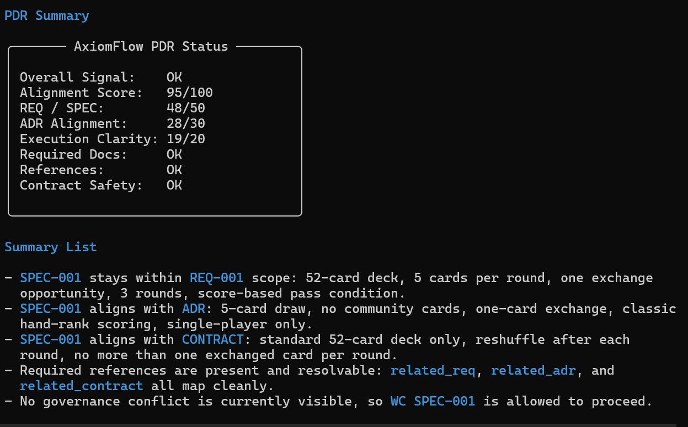
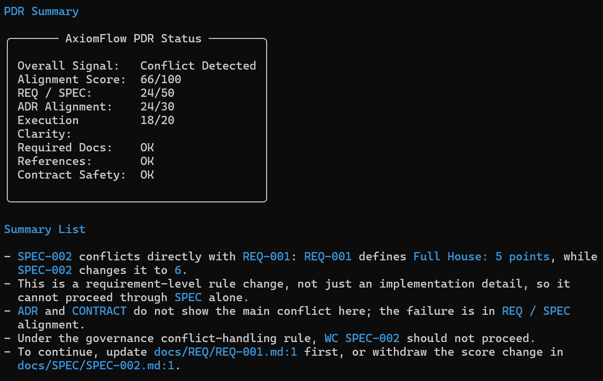
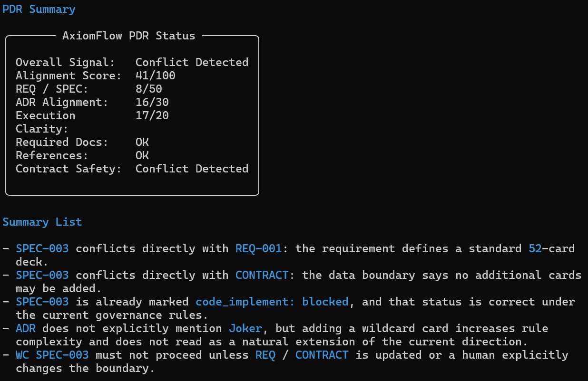

More output is no longer the bottleneck
Agents can draft plans, code, and documents in minutes. The risk moves upstream into decision quality.
AxiomFlow
AI can write code fast. AxiomFlow makes sure it does not run in the wrong direction first.
This demo uses a simple poker game to show what PDR
actually does: not more paperwork, but a real go / review / stop
checkpoint before implementation starts.
Why Now
Teams no longer struggle to get output. They struggle to keep fast output aligned with approved requirements, architecture direction, and hard boundaries.
Agents can draft plans, code, and documents in minutes. The risk moves upstream into decision quality.
A wrong assumption in SPEC can quickly become wrong
code, wrong tests, wrong docs, and wrong future decisions.
If alignment only lives in meetings or memory, it loses to speed. It has to become part of the execution path.
Why this example works
The base spec stays aligned with the approved 52-card game.
A scoring change looks harmless, but it silently rewrites the requirement.
A Joker feature sounds fun, but it breaks the current boundary outright.
PDR Demo
Each case uses the same governance system. Only the spec changes. That is the point: AxiomFlow does not guess whether work is safe to continue. It evaluates it.
Proceed
The team wants a minimal single-player poker game: 52-card deck, 5-card rounds, one exchange, three rounds, score threshold. Nothing new is invented. Nothing crosses the approved boundary.
PDR SPEC-001
REQ Conflict
The feature request sounds tiny: raise Full House
from 5 points to 6. But the current REQ still says
5. PDR catches the mismatch before implementation turns it into
silent drift.
PDR SPEC-002
Boundary Conflict
The new idea is bigger: add Joker as a wildcard.
But the current system truth says 52 cards only, and the
contract forbids adding more cards. PDR blocks execution before
the team builds the wrong game.
PDR SPEC-003
What AxiomFlow actually gives you
Alignment is checked against requirement truth, architecture truth, and hard boundaries.
The system does not only warn. It can visibly signal when work should stop.
Status output makes the decision fast to read, easy to review, and hard to ignore.